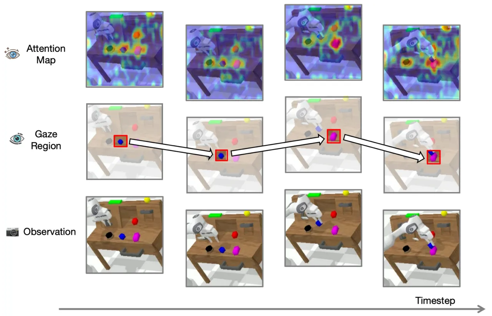
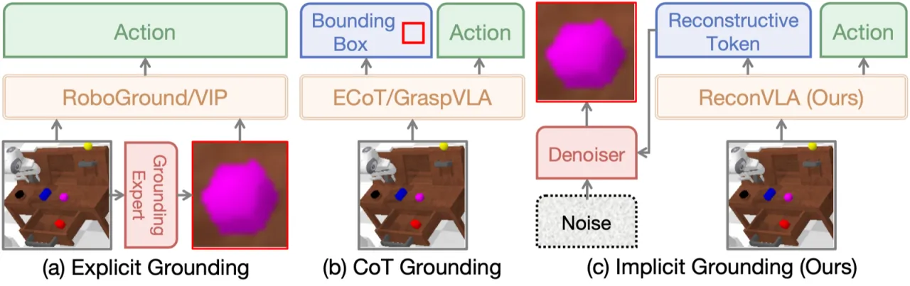
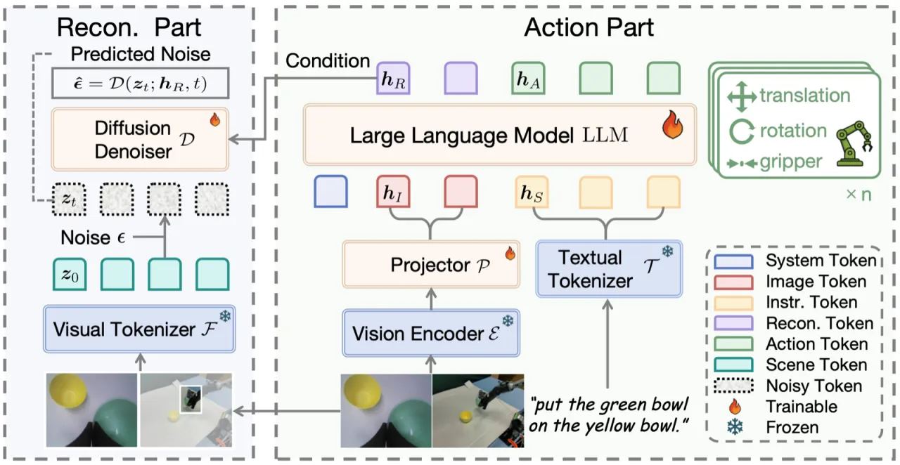
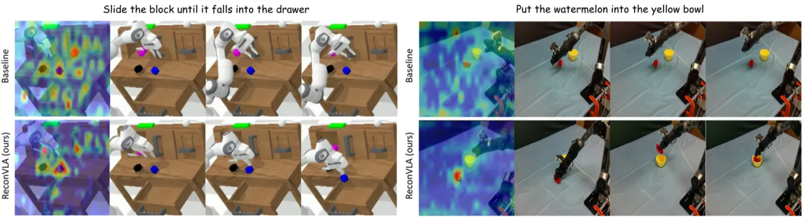
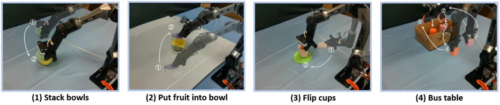

现有 Vision-Language-Action 模型的视觉注意力往往分散，无法聚焦于目标操作区域。ReconVLA 提出隐式 grounding 范式，借助 diffusion transformer 重建图像中的"凝视区域"，引导 LLM 骨干将注意力对准目标物体，从而大幅提升精细操作和未见目标的泛化能力。
现有 VLA 模型在视觉感知上存在根本性缺陷——注意力分散，难以精准定位目标操作物体，导致在杂乱场景和精细任务中表现不佳。
"visual attention is always dispersed" rather than focusing on target objects. Existing visual grounding methods either explicitly input cropped images or output bounding boxes in chain-of-thought fashion, but "do not fundamentally refine the attention allocation."
作者观察到，人眼感知的本质是：眼睛对焦的小区域清晰，周围区域模糊。现有 explicit grounding（输入裁剪图像）和 chain-of-thought grounding（输出 bounding box 坐标）两类方法都无法从根本上改变 LLM 内部的注意力分配。ReconVLA 通过隐式重建凝视区域，让模型在特征层面聚焦目标，而非依赖外部后处理。


ReconVLA 在标准 VLA 骨干（LLaVA-7b，Qwen2-7B LLM + siglip-so400m-patch14-384 视觉编码器）的基础上，新增一个与动作输出并行的重建分支：LLM 同时输出 action tokens 和 reconstructive tokens，后者驱动一个 diffusion transformer denoiser 从噪声中恢复凝视区域的 latent 特征。

总损失同时优化动作预测与视觉重建：
ℒ_ReconVLA = ℒ_VLA^action + ℒ_VLA^visual
其中动作损失为 cross-entropy 监督离散动作 token；视觉重建损失为扩散目标：
ℒ_VLA^visual(𝒉_R, I′) = 𝔼_{t,ϵ}[||𝒟(𝒛_t; 𝒉_R, t) − ϵ||²]
𝒉_R 为 LLM 输出的 reconstructive tokens，I′ 为凝视区域图像，𝒟 为由 Transformer encoder blocks 构成的 denoiser。通过对重建损失和动作损失同时反向传播，两个分支共享并强化相同的特征空间。
凝视区域并非简单的 bounding box 裁剪，而是"the target manipulated region"，其作用有三：(1) 在多物体杂乱场景中聚焦正确目标；(2) 增强对目标物体的细节感知；(3) 在长时序任务中辅助子任务规划。
作者通过在 BridgeData V2、LIBERO 和 CALVIN 数据集上微调 Grounding DINO 获取凝视区域标注，构建了包含超过 100k 条轨迹、200万个样本的配对数据集（原图 + 凝视区域裁剪图），用于预训练重建能力。预训练后再进行任务特定微调。
在 CALVIN 模拟基准（Franka Panda 机器人，34 种任务，4 个场景）和真实机器人平台（AgileX PiPer 6-DoF 机械臂）上进行评测，指标为 500 次 rollout 的逐子任务成功率及平均完成序列长度。
| 方法 | 1/5 | 2/5 | 3/5 | 4/5 | 5/5 | Avg. Len. |
|---|---|---|---|---|---|---|
| Baseline（标准 VLA） | 88.8% | 76.1% | 63.7% | 57.0% | 49.0% | 3.36 |
| Explicit Grounding (EG) | 94.4% | 82.5% | 70.9% | 62.2% | 50.2% | 3.61 |
| CoT Grounding (CG) | 47.0% | 14.3% | 1.6% | 0.0% | 0.0% | 0.63 |
| ReconVLA (IG, Ours) | 95.6% | 87.6% | 76.9% | 69.3% | 64.1% | 3.95 |
CoT Grounding "performance is even worse" 因为仅输出 bounding box 坐标不足以提供精细操作所需的精度。ReconVLA 在所有子任务长度上均取得最高成功率。
| 方法 | 类别 | 1/5 | 2/5 | 3/5 | 4/5 | 5/5 | Avg. Len. |
|---|---|---|---|---|---|---|---|
| GR-1 | 生成式 | 85.4% | 71.2% | 59.6% | 49.7% | 40.1% | 3.06 |
| CLOVER | 生成式 | 96.0% | 83.5% | 70.8% | 57.5% | 45.4% | 3.53 |
| OpenVLA | 大型 VLA | 91.3% | 77.8% | 62.0% | 52.1% | 43.5% | 3.27 |
| UniVLA | 大型 VLA | 95.5% | 85.8% | 75.4% | 66.9% | 56.5% | 3.80 |
| ReconVLA (Ours) | 重建式 VLA | 95.6% | 87.6% | 76.9% | 69.3% | 64.1% | 3.95 |
ReconVLA 在 5/5 子任务上超越 GR-1 超过 20%、超越 OpenVLA 20.6%、超越 UniVLA 7.6%。在 CALVIN ABCD→D 上也取得平均序列长度 4.23，与 GR-1 的 4.21 相当，超越 RoboFlamingo（4.08）和 VLAS（3.70）。

| 配置 | 1/5 | 2/5 | 3/5 | 4/5 | 5/5 | Avg. Len. |
|---|---|---|---|---|---|---|
| 完整 ReconVLA | 95.6% | 87.6% | 76.9% | 69.3% | 64.1% | 3.95 |
| 无预训练 | 96.8% | 86.9% | 76.9% | 64.9% | 58.2% | 3.85 |
| 无凝视区域（全图重建） | 89.8% | 80.3% | 67.7% | 56.6% | 46.5% | 3.42 |
| 仅 Baseline | 88.8% | 76.1% | 63.7% | 57.0% | 49.0% | 3.36 |
消融显示：凝视区域（gaze region）是核心贡献，"proves to be more effective" 于全图重建；预训练"substantially enhances generalization"尤其在长序列任务上。精细操作任务 "stack block" 中，ReconVLA 以 79.5% 胜过 baseline 的 59.3%，提升 20.2%。

在四项已知任务上，ReconVLA 的成功率均明显优于 OpenVLA 和 PD-VLA（Put Fruit 和 Stack Bowls 约 90%，Flip Cups 约 75%，Bus Table 约 70%）。在未见物体泛化测试中，OpenVLA 和 PD-VLA 成功率接近 0%，而 ReconVLA 仍维持较高成功率，展现出强大的视觉泛化能力。
预训练数据的凝视区域标注来自对 Grounding DINO 的微调。若目标物体描述模糊或视觉特征相近，检测器的准确性将影响重建质量，进而影响 VLA 的注意力引导效果。
相比标准 VLA，ReconVLA 在推理时需要额外运行 diffusion denoiser 来重建凝视区域 latent，增加了计算量和延迟。论文未报告推理速度指标。
真实机器人测试仅限于 4 种任务、每任务 20 次 trial，硬件平台也仅为单一型号（AgileX PiPer）。跨平台、跨任务的泛化性有待进一步验证。
论文实验主要集中在桌面抓取与摆放等较低速任务。对于需要高频闭环控制的精细操作（如插销、螺丝拧紧），重建分支能否保持实时性尚未评估。